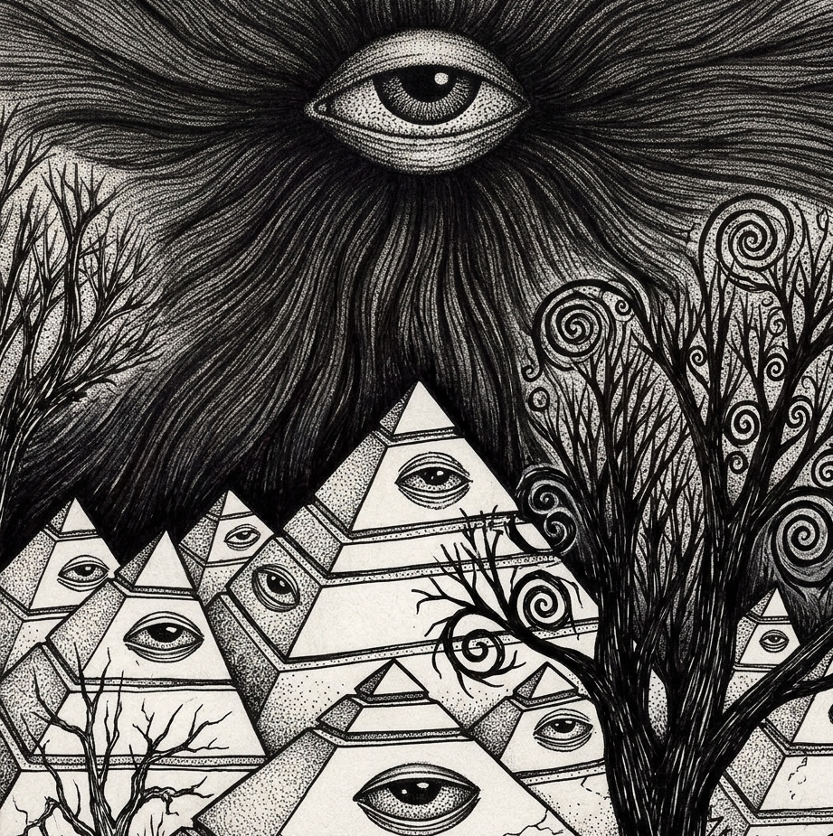
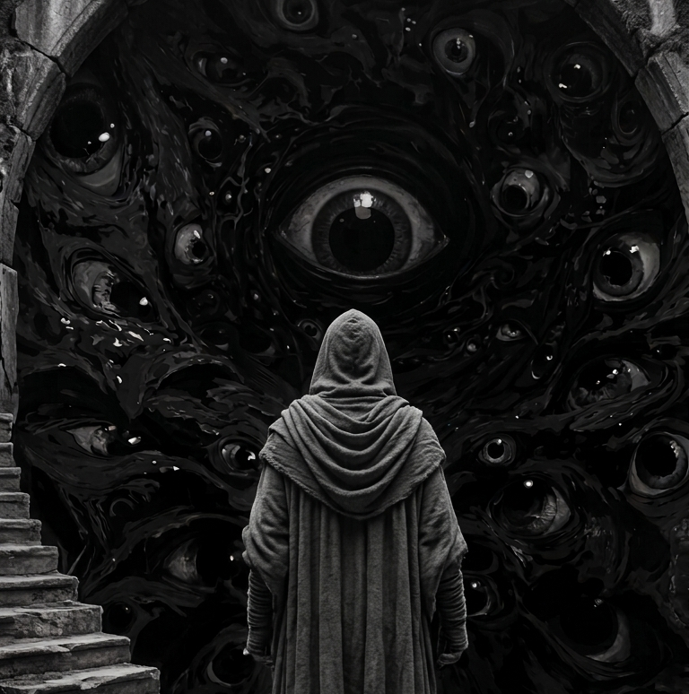

Filosofía del proyecto
Explorar lo humano sin apresurar las respuestas.
Psymind es un cuaderno editorial sobre conciencia, energía, emoción y percepción. Un lugar donde la curiosidad es más valiosa que la certeza.

Valores editoriales
Cada artículo busca abrir una ruta distinta hacia lo mental y lo espiritual, sin rigidez y sin ruido innecesario.
